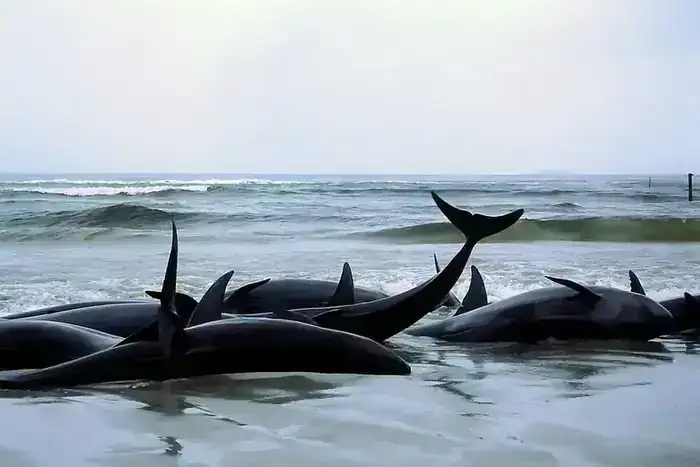
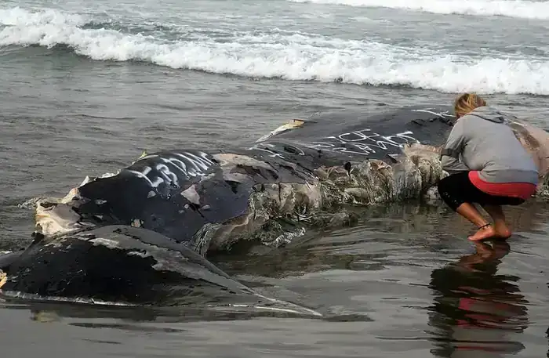
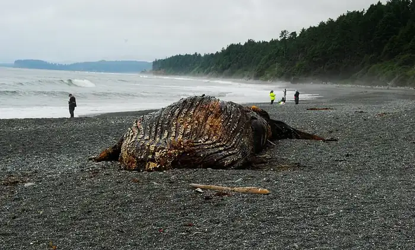

What happens
A single whale can strand because it is sick, injured or old. A mass stranding is different: dozens or hundreds of animals, often of one species, often in a tight group, often on a shallow sloping beach. Pilot whales and sperm whales are the commonest, and the pattern has been recorded for centuries.
Maps, diagrams and images






The animals are usually not all sick. Necropsies often find one or two with disease or injury and the rest apparently healthy, which points at the social structure rather than at individual pathology.
The explanations
The strongest social account is simple: these are highly cohesive animals that follow a leader or a pod-mate. If one navigates into trouble, the rest follow, and the refloating instinct works against them because they stay together in shallow water.
The strongest environmental account involves naval sonar. In 2000, beaked whales stranded across the Bahamas during a US Navy exercise using mid-frequency sonar; necropsies found gas-bubble lesions consistent with decompression, and the link has been supported by subsequent events and by controlled exposure studies. This is a documented human cause of strandings, not a hypothesis.
Beyond those two, the evidence thins. Geomagnetic anomalies are proposed because some species may navigate magnetically; the correlations are weak and the mechanism is unproven. Solar storms, seismic activity and pollutant loads have all been suggested, none has been demonstrated.
Documented: mass strandings occur, are dominated by a few social species, and often involve apparently healthy animals.
Documented: mid-frequency naval sonar has caused strandings, with post-mortem evidence.
Well supported: social cohesion as the mechanism that turns one animal's error into a pod's death.
Unproven: geomagnetic disturbance, solar activity, and most of the other environmental correlations.
The honest position: a real phenomenon with at least two well-supported causes and a large fringe literature attached to it.
Why it is in the archive
Because it is a case where the fringe explanation and the real one look similar from outside — both involve invisible forces acting on animals that navigate — and only one of them has a necropsy and a controlled exposure experiment behind it.
Open resources on this topic
- BookThe mystery of whale strandings : a cause and effect investigation — Rake, Jody Sullivan · 2011 (Internet Archive, free to read)
- BookWHALE STRANDINGS IN SOUTH AUSTRALIA 1881-1989 — ['C M Kemper', 'J K Ling'] · 1991 (Internet Archive, free to read)
- BookThe whale scientists : solving the mystery of whale strandings — Hodgkins, Fran, 1964- · 2007 (Internet Archive, free to read)
- PapersOpen-access articles: DOAJ · PubMed Central · Internet Archive Scholar
- BooksPublic-domain and borrowable copies: Open Library · Project Gutenberg · Google Books
More images
Cite this page
Momin, S. (2026). Whale Strandings. The Larger World Archive. https://drsamonline.github.io/LARGE_GLOBE/whale-strandings.htmlMomin, Sohil. “Whale Strandings.” The Larger World Archive, 2026, https://drsamonline.github.io/LARGE_GLOBE/whale-strandings.html.Momin, Sohil. “Whale Strandings.” The Larger World Archive, 2026. https://drsamonline.github.io/LARGE_GLOBE/whale-strandings.html.@misc{whale2026whale,
author = {Momin, Sohil},
title = {Whale Strandings},
year = {2026},
howpublished = {The Larger World Archive},
url = {https://drsamonline.github.io/LARGE_GLOBE/whale-strandings.html},
note = {Last reviewed 20 November 2026}
}Last reviewed 20 November 2026 · Corrections policy · this page is not peer reviewed
Sources for this page
- Wikipedia, “Cetacean stranding” — patterns, causes and historyen.wikipedia.org
- Wikipedia, “Beaked whale” — the group most associated with sonaren.wikipedia.org
- Wikipedia, “Marine mammal and sonar” — the documented casesen.wikipedia.org
- Wikipedia, “Pilot whale” — the commonest mass-stranding speciesen.wikipedia.org